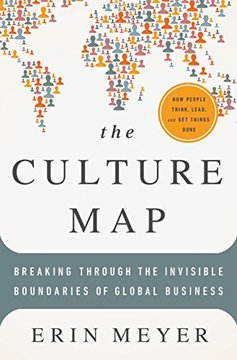
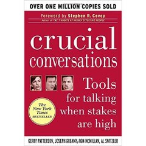
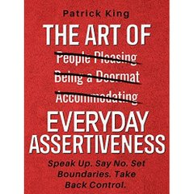

Módulo 06 / Apartado 4 de 6
Decir cosas que nadie quiere oír
Pasivo, asertivo, agresivo: dónde está exactamente la raya, por qué la complacencia comercial es veneno en este oficio, y por qué el punto justo se llama las siete y media y solo se encuentra pasándose unas cuantas veces.
La palabra, que suena a taller de autoestima
Asertividad es de esas palabras que se han gastado en cursos de recursos humanos hasta no querer decir nada. Y aquí es central, así que empecemos por la definición técnica, que es más precisa de lo que parece.
Asertividad es la capacidad de expresar tus opiniones y necesidades con confianza y sin agredir. La clave está en el equilibrio: ser franco con lo que quieres sin dejar de considerar los derechos, necesidades y deseos de los demás.
La línea con la agresividad es fina y la gente las confunde constantemente, así que conviene tener el eje entero delante:
La turra enumera lo que la literatura le atribuye a la gente asertiva, y merece la pena leerlo porque una de las líneas es literalmente la descripción del oficio:
- Dirigen mejor
- Consiguen que las cosas se hagan tratando a la gente con justicia y respeto, y reciben lo mismo a cambio. Suelen caer bien, que no es lo mismo que ser complacientes.
- Negocian mejor
- Reconocen el valor de la posición del otro y por eso encuentran terreno común antes. No porque cedan: porque escuchan de verdad.
- Resuelven mejor
- Se sienten con permiso para hacer lo que haga falta para encontrar la mejor solución. «CPS anyone?», apostilla la turra en ese punto.
- Y viven mejor
- Menos ansiedad y menos estrés, porque no se sienten amenazados ni victimizados cuando las cosas no salen como esperaban.
Por qué esto es crítico en este oficio y no en otros
Aquí está el argumento fuerte del apartado, y es incómodo para cualquiera que venga del mundo comercial.
Los ejemplos que pone la turra, tal cual: que ninguno de tus hijos sirve para la compañía. Que tu compañía vale cero y lo que necesitas es financiación. Que el talento del que dispones es claramente insuficiente.
Y al mismo tiempo, la persona que tienes delante está sola y asustada y necesita empatía. No puedes ser un arrogante insensible, aunque tengas razón. De hecho, sobre todo si tienes razón.
De ahí la frase que da título a este apartado, en su versión original y en mayúsculas: lo que te ayuda a corto plazo en la labor comercial clásica —la mantecosidad y la complacencia— es veneno puro aquí.
Y un apunte que conecta con el módulo 5: en la turra insiste, gritando, en que si haces esto con skin in the game, la persona que tienes delante no es tu cliente: es tu socio. No es una cursilería sobre relaciones. Es una afirmación sobre incentivos: si tú cobras pase lo que pase, tu incentivo es que te vuelvan a contratar, y eso te empuja hacia la complacencia. Si compartes el resultado, tu incentivo es que la cosa funcione, y eso te empuja a decir la verdad. Es Taleb otra vez.
Don Mendo y las siete y media
Para el punto medio, Recuenco tira de un clásico español que es la mejor metáfora que hay: La venganza de Don Mendo, de Pedro Muñoz Seca (1918). Las siete y media es un juego de cartas donde vas pidiendo hasta acercarte todo lo posible a siete y medio sin pasarte.
Que además no está en el mismo sitio en todas partes
Y aquí hay una complicación que la turra no toca y que en cuanto trabajas con gente de otros países te revienta en la cara. Dónde cae la raya entre asertivo y agresivo depende de la cultura, y hay alguien que lo ha medido con cuidado.

El libro de esto The Culture Map: Breaking Through the Invisible Boundaries of Global BusinessOcho escalas para situar culturas de trabajo, y la más útil aquí es la de crítica directa frente a crítica indirecta. Neerlandeses, alemanes, israelíes, rusos y franceses dan la crítica negativa de frente y con intensificadores —«esto es totalmente inaceptable»—. Japoneses, tailandeses o indonesios la envuelven hasta que casi no se ve. Y el hallazgo que descoloca a todo el mundo: estadounidenses y británicos son directísimos comunicando ideas y de los más indirectos criticando, con atenuadores por todas partes: «un pequeño detalle», «quizá podríamos considerar» — Erin Meyer · 2014
La consecuencia práctica es fea: la misma frase, dicha igual, puede leerse como profesional en Ámsterdam y como una grosería en Tokio. Y al revés: un «interesante, lo estudiaremos» de un británico puede significar «ni de broma» sin que nadie de la sala se entere. Tu calibración de las siete y media no es universal; es local.
Y el otro libro, que es el más citado del corpus en comunicación

El libro de esto Crucial Conversations: Tools for Talking When Stakes are HighVa exactamente de las conversaciones de este apartado: aquellas en las que hay mucho en juego, opiniones opuestas y emociones fuertes. Su idea operativa es que en cuanto una de esas tres cosas aparece nos vamos a uno de dos extremos —silencio o violencia— y que el trabajo consiste en mantener lo que llaman el pool de significado compartido: conseguir que todo lo que cada uno sabe llegue a estar encima de la mesa antes de decidir — Patterson, Grenny, McMillan y Switzler · 2002
Y la parte que nadie quiere: el poder
Falta una pieza incómoda. Todo lo anterior supone que si te explicas bien y con equilibrio, la buena idea gana. Y no es verdad. Las organizaciones son sistemas políticos, y hay un libro que lo dice sin moralina.
El libro de esto Managing With Power: Politics and Influence in OrganizationsPfeffer, catedrático de comportamiento organizativo en Stanford, parte de una observación demoledora: casi todos los libros de gestión explican qué hay que hacer y casi ninguno explica cómo conseguir que se haga cuando hay gente en contra. Aborda de frente de dónde sale el poder —posición, recursos, aliados, información, control de la agenda— y cómo se usa. No es un libro cínico; es un libro que se niega a fingir que las organizaciones son máquinas racionales — Jeffrey Pfeffer · 1992
Cómo encaja con lo anterior sin contradecirlo. La asertividad te da el registro para decir la verdad sin que te echen. Pfeffer te recuerda que decir la verdad, incluso bien dicha, no basta: hace falta que la diga alguien a quien se escuche, en el momento en que se decide, delante de quien decide. Y eso último se construye antes, y no se improvisa el día de la reunión.
El resumen operativo
Sí a la persona, no a la tarea. Es una frase tonta y funciona porque quita del medio la lectura personal.
La complacencia inicial no evita la conversación, solo la aplaza y la encarece. Y cuanto más tarde llegue, más parecerá una traición.
La raya entre firme y grosero se mueve entre culturas y entre empresas. Antes de dar una opinión dura fuera de tu terreno, mira dónde está la raya de ellos.
De las mil veces, unas te pasas y otras no llegas. No hay manera de encontrar el punto sin fallarlo. Lo que no vale es no jugar.
Fuentes de este apartado
Las turras de las que sale
Empieza con un descargo —ni es psicólogo ni lo pretende— y luego se pone a ello igualmente en el terreno que sí conoce. Define asertividad, la separa de la agresividad con el ejemplo del jefe y las vacaciones, enumera los beneficios documentados y aterriza en lo que hace que esto sea crítico aquí: el oficio obliga a decir cosas durísimas a alguien que está solo y asustado. Cierra con Don Mendo y las siete y media.
La psicología para la acción comercialTurra · 39 tweets · nov 2020El complemento por el lado comercial. Es donde desmonta la idea de que vender consiste en caer bien, y donde explica por qué las técnicas que funcionan en una venta transaccional son contraproducentes cuando lo que vendes es un diagnóstico que el otro no quiere oír. Se lee bien junto a la de asertividad.
Los libros
El más citado del corpus en materia de comunicación. Mucho en juego, opiniones opuestas y emociones fuertes: el manual de qué hacer cuando se dan las tres a la vez. Es práctico hasta el punto de resultar mecánico, y eso es justo lo que se agradece cuando estás en medio de una de esas conversaciones.
The Culture MapErin Meyer · 2014Ocho escalas para no confundir un estilo cultural con un rasgo de carácter. La escala de crítica directa contra crítica indirecta es la que hace falta aquí, y el hallazgo sobre estadounidenses y británicos —directísimos con las ideas, indirectísimos con las críticas— explica media década de malentendidos en cualquier empresa multinacional.
Managing With PowerJeffrey Pfeffer · 1992Poder y política organizativa sin moralina, de un catedrático de Stanford. La premisa: los libros de gestión te dicen qué hacer y no cómo conseguir que se haga con gente en contra. Es el correctivo necesario a la idea de que basta con explicarse bien.

The Art of Everyday AssertivenessPatrick King · 2018Enlazado en el corpus. Es un manual corto y práctico —poner límites, decir que no, salir de la complacencia— sin ninguna pretensión académica. Va aquí porque la turra habla de asertividad como una habilidad que se entrena, y para entrenarla hacen falta ejercicios, no teoría.